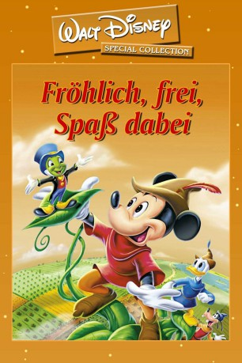

#3720 Fröhlich, frei, Spaß dabei
Alternativ: Fun & Fancy Free
 
 IMDB-Wertung: 6.8 / 10
IMDB-Wertung: 6.8 / 10  Metascore: 0
Metascore: 0 
Der Film besteht aus den zwei unabhängigen Trickfilmen "Bongo" und "Micky und die Zauberbohne". Der erste Film dreht sich um den in Gefangenschaft geborenen Zirkusbären Bongo, der nach seiner Flucht erkennt, dass es in die Freiheit neben all den Annehmlichkeiten auch Gefahren gibt. Der zweite Film spielt in einem glücklichen, märchenhaften Tal, in dem Eintracht und Glück herrscht. Quell dieses Glückes ist eine singende Harfe, welche eines Tages aus dem Schloss gestohlen wird. Daraufhin verfällt das ganze Tal in Unglück, so auch die drei Bauern Goofy, Micky und Donald. Sie machen sich sich auf die Suche nach der Harfe…
Jahr: 1947
Dauer: 70 Minuten
FSK:
Land: USA Studio: RKO Radio Pictures, Inc.Tonspuren: DTS - ,
Untertitel: Deutsch, Englisch,
Auflösung: 720p (960x720) Größe: 2437 MB
Genre: Musik, Animation/Trick, Familie
Regisseur:
Drehbuch: Doug Ellin
Soundtrack:
Darsteller:
- Dinah Shore als Herself - Narrator
- Walt Disney als Mickey Mouse
 Cliff Edwards als Jiminy Cricket
Cliff Edwards als Jiminy Cricket Billy Gilbert als Willie the Giant
Billy Gilbert als Willie the Giant- Edgar Bergen als Edgar Bergen / Charlie McCarthy / Mortimer Snerd
- Charlie McCarthy als Charlie
- Mortimer Snerd als Mortimer
- Luana Patten als Luana
- Anita Gordon als Singing Harp
 Clarence Nash als Donald Duck / Cat
Clarence Nash als Donald Duck / Cat- The King's Men als Singers
- The Dinning Sisters als Singers
- The Starlighters als The Starlighters
- Pinto Colvig als Goofy , uncredited
 James MacDonald als Mickey Mouse , uncredited
James MacDonald als Mickey Mouse , uncredited
Datei: X:\Kinder Disney HD\Classic Cartoon\Fröhlich, frei, Spaß dabei (1947, FSK, 960x720).mkv seit 26.05.2016
Festplatte: Kinder-Filme+Trick
 Es gibt insgesamt 22 Filme in der Gruppe 'Kinder Disney HD\Classic Cartoon'
Es gibt insgesamt 22 Filme in der Gruppe 'Kinder Disney HD\Classic Cartoon'